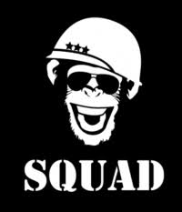

OS criadores do jogo: Squad
Squad é uma equipe independente de desenvolvimento que fez o Kerbal Space Program.
É composta por cerca de
15 pessoas. Atualmente, KSP é o único jogo deles.

Squad é uma equipe independente de desenvolvimento que fez o Kerbal Space Program.
É composta por cerca de
15 pessoas. Atualmente, KSP é o único jogo deles.